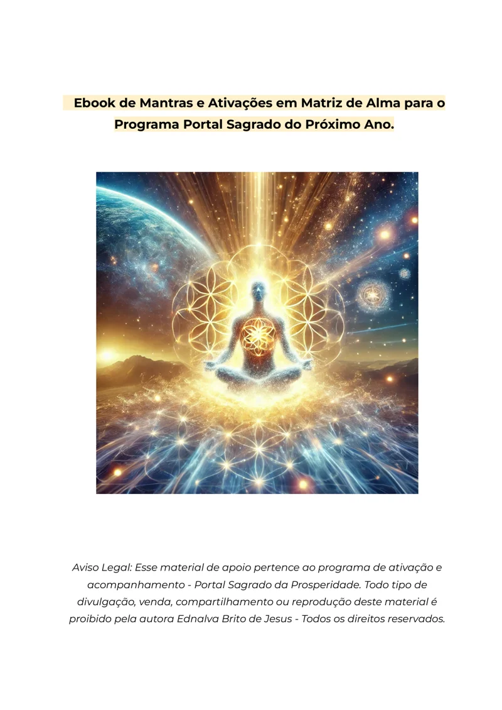
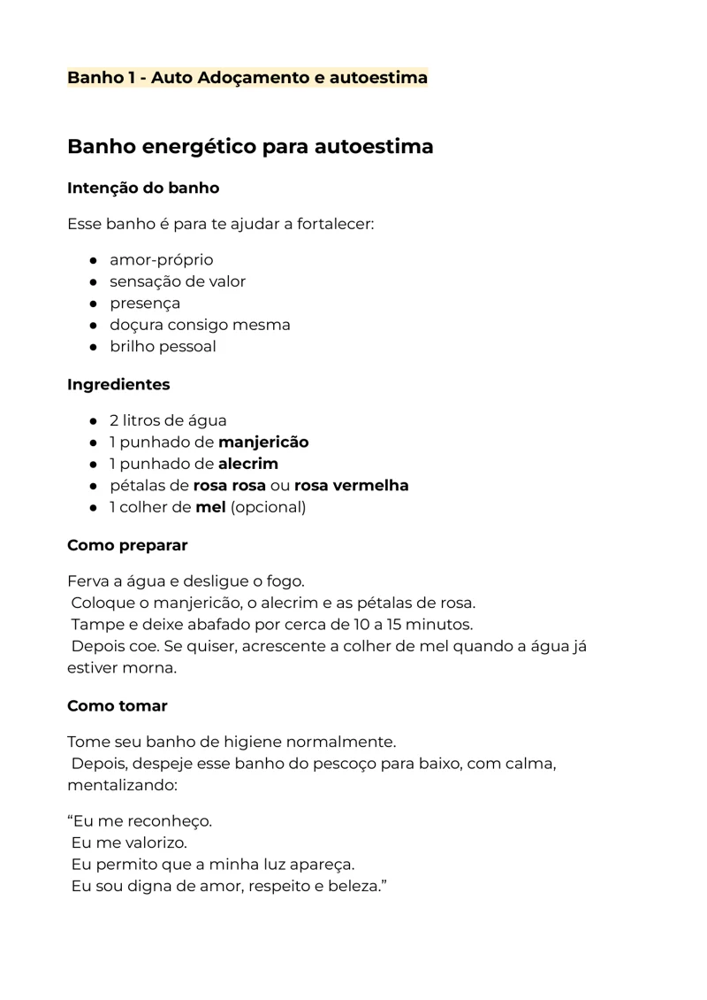

Bem-vindo(a) ao seu Portal Sagrado.
Este é o seu templo pessoal para ancorar a consciência da sua Matriz de Alma, transmutar as feridas do ego e sustentar uma vida plena de prosperidade.
Ative seu Personagem de Matriz de Alma
Inicie o dia alinhando sua frequência com a sua verdadeira essência divina. Ativação guiada para destravar a energia da criação e soberania.
Libere e cure seu Personagem do Ego Ferido com EFT
Feche o dia dissolvendo tensões, autocrítica e bloqueios através da técnica de acupuntura emocional EFT, pacificando seu campo energético.
Biblioteca Sagrada
Documentos originais preservados para sua consulta e ativações diárias.


Suas Reflexões Recentes
Ative seu Personagem de Matriz de Alma
Dedique os primeiros momentos do seu dia para sintonizar a sabedoria da sua essência pura e selar a sua intenção de prosperidade.
👉 Para assistir embutido no Mac: Dê um duplo-clique no arquivo
abrir-portal.command (servidor local instantâneo) ou acesse pelo link da Vercel.👉 Ou clique no botão Abrir no YouTube abaixo para assistir diretamente.
Aula: Ativação Matriz de Alma
Ednalva Brito • Portal SagradoGuia de Alinhamento da Matriz de Alma
Feche os olhos por 2 minutos, inspire trazendo luz dourada para o peito e solte o ar liberando a urgência do dia.
Declare em voz alta os decretos do Ebook de Mantras, afirmando seu merecimento intrínseco e sua conexão vital.
Escreva sua intenção para o dia de hoje no campo ao lado para que ela se manifeste em suas ações e decisões.
Reflexão Matinal
Como sua Matriz de Alma se sente hoje? Qual postura e energia você escolhe sustentar diante das oportunidades e desafios?
Consulte os 29 decretos oficiais na Biblioteca de Estudos para aprofundar sua prática de prosperidade.
Libere e cure seu Personagem do Ego Ferido com EFT
Finalize o dia dissolvendo o cansaço, os medos inconscientes e as cobranças acumuladas através da acupuntura sem agulhas (EFT).
👉 Para assistir embutido no Mac: Dê um duplo-clique no arquivo
abrir-portal.command (servidor local instantâneo) ou acesse pelo link da Vercel.👉 Ou clique no botão Abrir no YouTube abaixo para assistir diretamente.
Aula: Cura do Ego Ferido com EFT
Ednalva Brito • Portal SagradoPontos Fundamentais de Toque (EFT Tapping)
Dê toques suaves (cerca de 5 a 7 toques) em cada ponto enquanto repete a frase de liberação ensinada na aula:
Reflexão & Liberação Noturna
O que o seu Ego Ferido tentou controlar ou temer hoje? O que você escolhe entregar e perdoar antes de dormir?
Fortaleça sua autoestima e presença com manjericão, alecrim e pétalas de rosa. Indicado especialmente nas noites de sexta-feira.
Biblioteca Sagrada de Estudos
Acesse os materiais oficiais do curso em seus formatos originais, preservados com integridade e alta resolução para sua leitura e prática.
Ebook de Mantras e Ativações em Matriz de Alma
Minha Jornada Diária
Acompanhe seu compromisso com suas práticas matinais e noturnas, cultivando a disciplina sagrada da prosperidade.
Práticas Matinais • Matriz de Alma
Práticas Noturnas • Liberação EFT
Visão Semanal de Consistência
Últimos 7 dias de prática e presença consciente. Clique em qualquer dia para revisar:
Métricas do Santuário
Diário Sagrado
Seu espaço confidencial para registrar percepções, catarses, intenções da Matriz de Alma e decretos pessoais. Todos os dados permanecem salvos somente no seu navegador.
localStorage deste dispositivo. Para migrar ou guardar com segurança, utilize o backup em JSON.